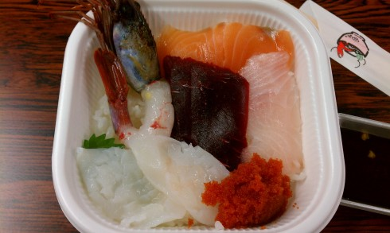
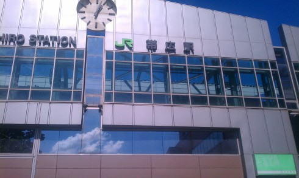
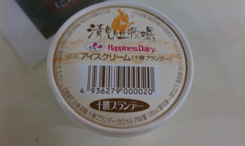
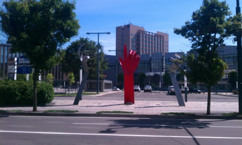
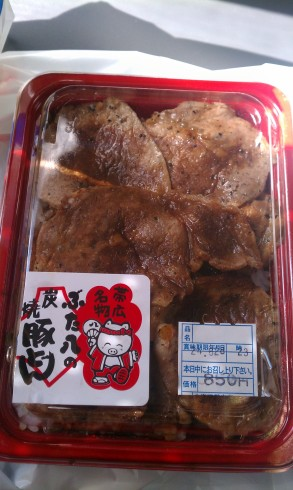
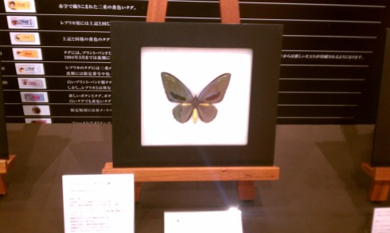

北海道旅行記(2012/08/25 - 2012/08/28) その3
その2 の続き．
8/28
8時くらいに起きて，釧路駅から3分くらいのところにある和商市場へ． 海産物やおみやげの類を売ってる普通の市場． 歩き回ってたら魚屋のおばちゃんに声をかけられて「勝手丼」というものを勧められる． 惣菜屋で白いごはんだけ買ってから魚屋で刺身を買って乗せ，好きな具材で海鮮丼を作ることができるらしい．

海鮮丼．具材は時知らず，鯨，活たこ，はまち，ぶどうえびとおまけでもらったししゃも卵の醤油漬け． ごはんと具材合わせて1400円くらい． 基本的には1品100円か200円くらいなのだが，ぶどうえびが600円なのでちょっと高い．
時知らずは鮭の一種だけど，秋以外にも川を上ってくるから時知らずというらしい． 確かに鮭のような脂の乗り方だけどくどくなくておいしい． ぶどうえびは甘エビみたいな感じだった．おいしいけど600円かどうかは微妙．
11:29のスーパーおおぞらで帰る予定だったのだが，2時間ほど余ってしまう． 仕方ないので釧路を適当に歩き回って，前日に釧路川のそばで見かけたMooという建物に入ってみる．
中は観光用施設っぽく，土産屋がたくさん並んでいた． あと隣にeggというガラス張りの建物があって，温室みたいになっていて植物を展示していた (写真は撮り忘れた……)．
時間をつぶして釧路駅に戻り， スーパーおおぞら に乗車．
{kind=link}
そして帯広で下車．

飛行機に間に合うためには30分後のスーパーとかちに乗らないといけないため，そんなに時間はない．
とりあえず駅構内にある物産展でアイスを買って食べる．

濃厚な牛乳の味とブランデーの風味でおいしい．
そして駅周辺を散策． 気温は34℃ ．暑い……． 駅前には謎のオブジェがあった．
{kind=link}

駅に戻って炭焼豚丼の駅弁を買い， スーパーとかち に乗車．
{kind=link}

駅弁． 中身はサラダやおしんこもなく，本当にごはんと豚肉だけだけど，豚肉は脂っこくなくしっかりした食感で噛むとうま味が出てくる． 甘いタレと炭焼きの香りも合っていて，全く飽きることなく最後まで食べられた．
南千歳で乗り換えて新千歳空港に到着． 妹と合流する．
出発までちょっと時間があったので，空港の3階にあるパナソニックの展示室を見る．

なんか珍しい蝶の標本らしい．よくわからん．
隣ではロイズが空港内に生産ラインを作っていて， ガラス張りでラインが見えるようになっていた ． クリスピークリームドーナツみたい．
{kind=link}
この後は飛行機にのって，空港からシャトルバスで帰宅． おつかれさまでした．